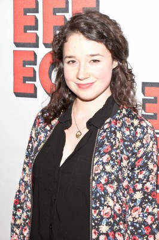

#10771 Song One

 IMDB-Wertung: 5.8 / 10
IMDB-Wertung: 5.8 / 10  Metascore: 48
Metascore: 48 
Franny und ihre Familie haben sich voneinander entfremdet, die junge Frau lebt entfernt von ihren Verwandten. Als ihr Bruder Henry nach einem Autounfall im Koma liegt, fühlt sie aber die Verpflichtung, nach New York City zurückzukehren. Franny liest das Notizbuch des Verletzten, um dessen Leben, das der aufstrebende Musiker in Brooklyn führte, auf den Grund zu gehen. Was ist in ihrer Abwesenheit passiert? Die Heimkehrerin besucht die Musiker und anderen Künstler, die Henry mochte, und kommt dabei auch mit James Forester in Kontakt, dem musikalischen Idol des Bruders. James ist trotz seiner Berühmtheit ein schüchterner und zurückgezogener Mann. Franny und James beginnen eine Liebesbeziehung, die aber schon bald durch ungünstige Umstände gefährdet wird…
Jahr: 2014
Dauer: 88 Minuten
FSK: 0
Land: USA Studio: The Film ArcadeTonspuren: DD5.1 - ,
Untertitel:
Auflösung: 1080p (1920x1040) Größe: 6328 MB
Genre: Drama, Musik
Regisseur: Kate Barker-Froyland
Drehbuch: Kate Barker-Froyland
Soundtrack: Jenny Lewis, Johnathan Rice, Nate Walcott
Darsteller:
 Mary Steenburgen als Karen
Mary Steenburgen als Karen Anne Hathaway als Franny
Anne Hathaway als Franny- Johnny Flynn als James Forester
 Lola Kirke als Rema
Lola Kirke als Rema Grace Rex als Bride
Grace Rex als Bride-  Sarah Steele als iPod autograph girl
 Li Jun Li als James Forester's Journalist
Li Jun Li als James Forester's Journalist- Sharon Van Etten als Herself
 Ben Rosenfield als Henry
Ben Rosenfield als Henry Gideon Glick als Everett
Gideon Glick als Everett Kitty Crystal als James' Friend
Kitty Crystal als James' Friend- Shawn Parsons als Roadie
- Al Thompson als Andy
 Peter Francis James als Neurosurgeon
Peter Francis James als Neurosurgeon Katrina E. Perkins als Hippie Woman
Katrina E. Perkins als Hippie Woman- Emily McKinley Hill als Henry's Friend
- Roderick Hill als The Groom
- Lavinia Jones Wright als College Girl
- Steven Anderson als Merch Guy
- Jonah Larrama als Hospital visitor
- Cass Dillon als Paul
- Susan Millard als Nurse
- Dan Deacon als Himself (uncredited)
 Alan Davis als Concert Fan
Alan Davis als Concert Fan- Jessamine Kelley als Tess
- Stefano Villabona als Rock Concert Goer
- Elizabeth Ziman als Accordion Player
- Monna Sabouri als Bedouin Bride
- Steve Antonucci als Bartender
- Ariana Ionescu als Concert Dancer
- Arun Bhatt als Taxi Cab Driver (credit only)
- J. Michael Kent als Tattooed Hipster
- Walter DeForest als Handlebar Moustache Doorman
- Johnathan Pratt als Henry's roommate
- Jason Mullen als Tattooed Pedestrian (uncredited)
Datei: X:\2014(N-Z)\Song One (2014, FSK0, 1920x1040).mkv seit 22.02.2019
Festplatte: HD 2013(I-Z)-2014(A-Z)
 Es gibt insgesamt 163 Filme in der Gruppe '2014(N-Z)'
Es gibt insgesamt 163 Filme in der Gruppe '2014(N-Z)'